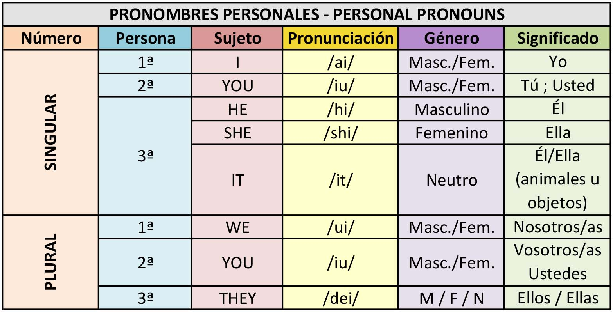

Pronombres personales
Para realizar una presentación en cualquier idioma, necesitamos construir un pequeño texto, y para ello, necesitamos construir oraciones. Las oraciones se forman con un sujeto y un predicado (que es donde va el verbo de la oración). Para el sujeto, podemos usar tanto sustantivos, como pronombres personales (que son palabras que sustituyen a los sustantivos).
A continuación tienes un vídeo en el que te explican estos pronombres personales en inglés, en comparativa con los pronombres personales en español:
https://www.youtube.com/watch?v=mDdBvF0j-Zk&ab_channel=InglesF%C3%A1cil-ALEMA
También los tienes en imagen para que te sea más fácil identificarlos:
